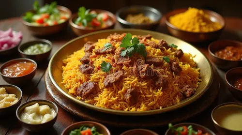
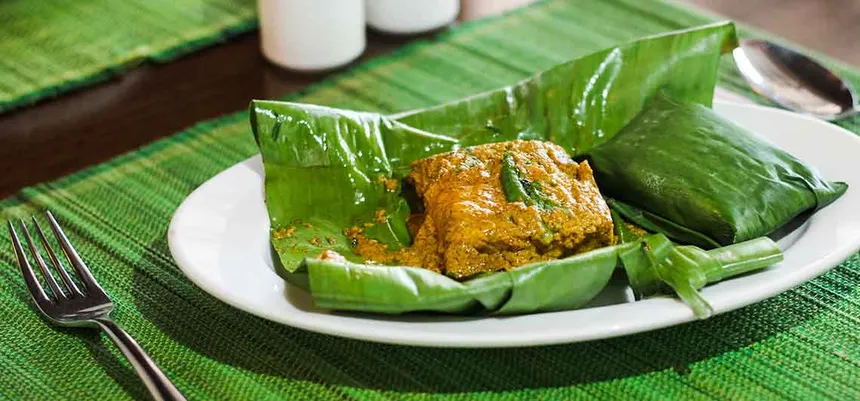
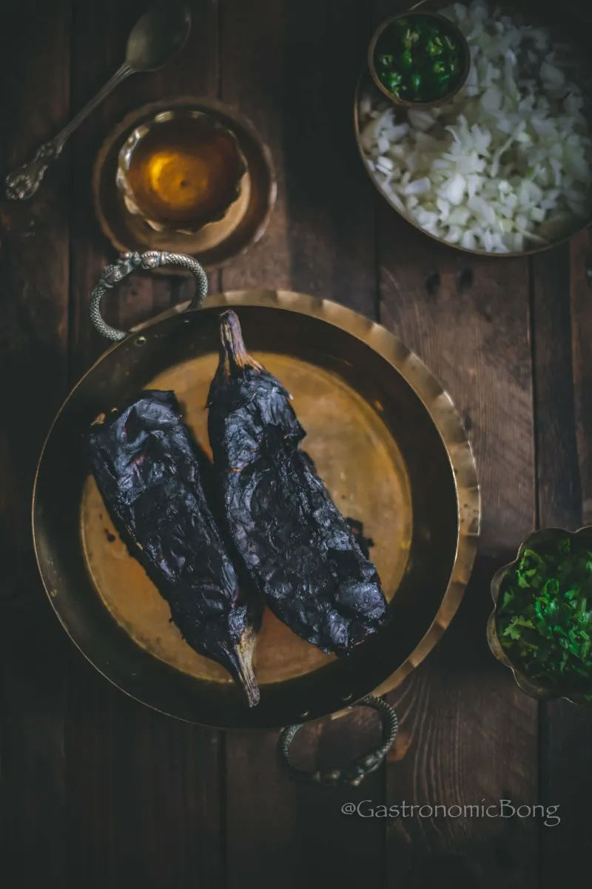

Bhuna Khichuri

Ingredients
- 2 cups Basmati rice
- 1 cup moong dal (yellow lentils)
- 2 sliced onions
- Ginger-garlic paste
- Salt, turmeric, and garam masala
Cooking Steps
- Dry roast the lentils until lightly golden.
- Wash and drain the rice and dal.
- Sauté onions in oil until golden.
- Add ginger-garlic paste and spices, and cook well.
- Add rice and lentils, mix thoroughly, add water, and cook until done.
Ilish Bhapa

Ingredients
- 6 pieces of hilsa fish
- Mustard paste
- Mustard oil
- Green chilies
- Salt and turmeric
Cooking Steps
- Marinate fish with salt and turmeric.
- Make a paste with mustard, green chilies, and mustard oil.
- Coat the fish with the mixture.
- Steam for 20–25 minutes.
- Serve hot with steamed rice.
Begun Bharta

Ingredients
- 1 large eggplant
- 2 green chilies
- 1 chopped onion
- Mustard oil
- Salt
Cooking Steps
- Roast the eggplant until soft and peel off the skin.
- Mash it with green chilies and chopped onion.
- Add mustard oil and salt, mix thoroughly.
- Serve with hot rice.